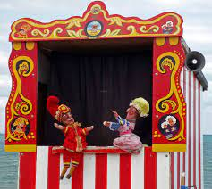

Kukla, çeşitli sahne gösterilerinde kullanılmak üzere yapılan ve insan eliyle hareket ettirilen figür, insan ve hayvan biçiminde ya da soyut biçimli olabilir. Gösteride kullanılmayan ve kuklacı tarafından oynatılmayan oyuncak bebek ve kurgulu oyuncak gibi otomatlar ise kukla sayılmaz.
Kuklalar iki ya da üç boyutlu olabilir; parmak boyundakilerden insan boyunu aşanlara, çok basit biçimlerden süslü ve gelişkin figürlere kadar çok çeşitli türleri vardır. Bir kuklayı birden çok kuklacı oynatabileceği gibi bunun tersi de geçerlidir. En yaygın türleri el kuklası, sopalı kukla, tezgâh altından yönetilen gölge kuklaları ve marionette de denen ipli kuklalardır. Bunlardan en büyük ustalığı gerektirdiği kabul edilen ipli kukla, kontrol çubuklarına bağlı ip ya da tellerle yukarıdan hareket ettirilir. Basit bir örneğinde ipler bacaklar, eller, omuzlar ve kulaklarla omurganın bitimi olmak üzere dokuz yerden iliştirilir; ipler çoğaltılarak daha ayrıntılı hareket olanağı sağlanır. Kuklacı ne tür kukla kullanırsa kullansın, fonla karışan giysiler giyerek ya da bir perde arkasına saklanarak gizli kalmaya çalışır. Bu özelliğiyle de kuklacılık tiyatro, pandomim ve dans gösterilerinden ayrılır.
Kuklacılığın kökeni büyü törenlerinde aranabilir. Yazıyı bilmeyen ilkel insanların da kukla yaptıkları kesindir. Kabile yaşamında ortaya çıktığından bu yana uygarlığın parçası olan kuklalar Eski Mısır, Yunan ve Roma’da kullanılmıştı. Hıristiyan Kilisesi Kitabı Mukaddes’ten sahneleri ele alan oyunlarda kukla kullanılmasına önce izin verdi; daha sonra ise bunu yasakladı. Böylece gösterilerini sokaklarda sürdürmek zorunda kalan kuklacılar kentten kente dolaşarak fars, slapstick ve gölge oyunlarından oluşan repertuvarlannı sundular. 17. yüzyılda bir kişiyi temsil etmekten çok, kalıp bir tip olarak ortaya çıkan kekeme kukla Napoli’de “Pulcinella”, Fransa’da “Polichinelle”, Rusya’da “Petruşka”, Londra’da da “Punch” adıyla yaygınlaştı.

Uzakdoğu’da kuklacılık, tıpkı Batı’daki gibi folklor ve kahramanlık oyunlarına dayanmakla birlikte, daha değişik bir yönde gelişti. Uzakdoğu’da da kuklalar dayanıklı, hafif ve anlatım zenginliği kazandırmaya elverişli malzemelerden kesilir, biçimlendirilir ve giydirilirdi. Cava, Bali ve Tayland’da yapılan gölge oyunu kuklaları iki ya da üç boyutlu olabilir, ama hep ışıklandırılmış saydam bir perdenin arkasından çıtalarla oynatılırdı. 18. yüzyılda Japonya’da kukla ustası Uemura Bunrakuken’in yaptığı ve onun adıyla anılan kuklalar günümüze değin yapılmış en stilize, gelişmiş ve sanatlı örneklerdir. Boyutları gerçek yaşamdakinden daha küçük olan Bunraku kuklaları üç kişi tarafından oynatılır; baş, gözler ve sağ kolu usta, sol kol ile bacakları ise iki yardımcı hareket ettirir.
18. yüzyıla değin Avrupa’da kuklacılık çok yaygınlaştı ve daha önce gezginci olan kuklacılar sürekli tiyatrolar açmaya başladı. Gösterilerde çoğunlukla çağdaş opera parçaları taklit edilmekle birlikte, Alessandro Scarlatti ve Josef Haydn gibi ciddi opera bestecileri kukla tiyatroları ve özellikle ipli kukla için de yapıt yazdılar. İtalyan sahne tasarımcısı Antonio Bibiena 1780’de Londra’da bir kukla tiyatrosunun dekorlarını hazırladı. Amerika kıtasında da kukla tiyatroları kuruldu ve kukla için hazırlanan yeni yergiler ve bürleskler kitlelerin olduğu kadar zenginlerin ve ünlülerin de ilgisini çekmeye başladı. Ne var ki kuklaların en yaygın olduğu bu dönemde bile hiçbir kukla ustası büyük üne kavuşamadı. Kukla tiyatrosuyla ilgilenen sanatçılar hep başka alanlardaki yeteneklerini bir süre için bu alana yöneltmişlerdi.
19. yüzyılda kalabalık gezginci kukla tiyatrolarının pandomim gösterileri yaygınlaştı; evlerde de oyuncak tiyatro maketleri toplanmaya başladı. Kukla kabareleri oturma odalarına girdi. 1900’e gelindiğinde birçok kukla gösterisi kısaltılarak vodvil sahnelerine dönüştürüldüyse de Punch ve Judy’nin yanı sıra “Bebek”, “Polis” ve “Cellat” karakterleri de korundu. Kuklacılığın canlandırılması sırasında yetişkin seyirciye seslenmek hedef alındı ve bunda bir ölçüde başarı sağlandı. Yazar ve tiyatrocu Edvvard Gordon Craig tiyatro yazarlarını kuklanın sınırlayıcı öğelerini bir yana bırakmaya çağırdı. 1920’lerde de Alman Lotte Reiniger film tekniklerinden yararlanarak gölge oyunu kuklalarına dayanan çok çarpıcı bir dizi siluet gösterisi gerçekleştirdi.
20. yüzyılın ikinci yansında kuklalar televizyon aracılığıyla geniş izleyici kitlelerine ulaştı. Amerikalı kuklacı Jim Henson’ın “Sesame Street” (Susam Sokağı) adlı televizyon dizisi için yarattığı “Muppet”lar dünyanın birçok ülkesinde ünlendi. Fransız kuklası Guignol’un, İtalyan Arlecchino’nun ve Alman Kasperle’nin yüzyıllardır anlatılan öykülerini kullanan gezginci kumpanyalara, kuklaların yanı sıra maske, akrobasi ve oyunculuk öğelerine ya da yeni öykülere yer veren topluluklar eklendi. Doğu Avrupa’da da hükümet desteğiyle çok yaratıcı ve geniş bütçeli gösteriler düzenlendi.